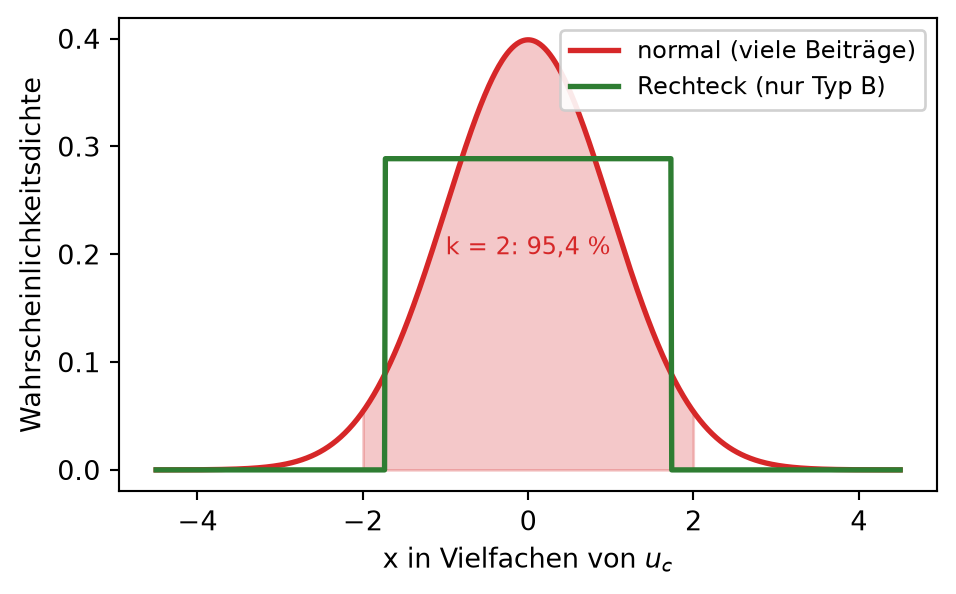
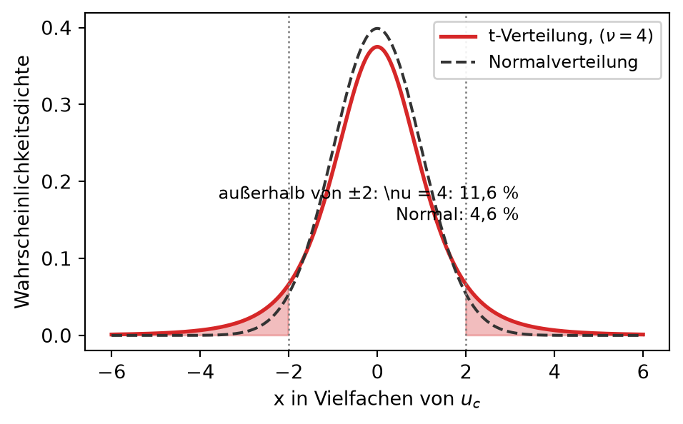

\(k\) … Erweiterungsfaktor (Überdeckungsfaktor)
\(U\) … erweiterte Unsicherheit
\(\nu\) … Freiheitsgrade der Messreihe (n - 1)
\(\nu_{eff}\) … effektive Freiheitsgrade (Welch-Satterthwaite)
\(\sigma\) … wahre Standardabweichung (Streuparameter)
Dieses Kapitel bündelt Vertiefungen, die im Grundstoff meist zu weit führen: die saubere Begründung des Erweiterungsfaktors \(k\) über die Verteilung der Ausgangsgröße sowie die Student-\(t\)-Verteilung für wenige Messwerte.
Verwendete Symbole:
\(k\) … Erweiterungsfaktor (Überdeckungsfaktor)
\(U\) … erweiterte Unsicherheit
\(\nu\) … Freiheitsgrade der Messreihe (n - 1)
\(\nu_{eff}\) … effektive Freiheitsgrade (Welch-Satterthwaite)
\(\sigma\) … wahre Standardabweichung (Streuparameter)
Die erweiterte Unsicherheit \(U = k\,u_c\) ist ein Quantil der Verteilung der Ausgangsgröße: Das Intervall \(y \pm k\,u_c\) soll einen vereinbarten Anteil (meist \(p = 95\) %) der plausiblen Werte der Messgröße überdecken. Bei normalverteilter Ausgangsgröße hängt der Faktor direkt an der Verteilungsfunktion \(\Psi\):
Psi = Symbol(r'\Psi')
QBookHelpers.print_equation(Eq(Psi, (1 + erf(k_s/sqrt(2)))/2), label='eq-ueberdeckung')
table_zeilen = []
for kk in [1, 2, 3]:
p_prozent = 100*float(erf(kk/sqrt(2)))
table_zeilen.append(f'| {kk} | {str(round(p_prozent, 1)).replace(".", ",")} % |')
display(Markdown('| ' + latex(k_s) + ' | Überdeckungswahrscheinlichkeit (normalverteilt) |\n|--:|--:|\n' + '\n'.join(table_zeilen)))\[ \Psi = \frac{\operatorname{erf}{\left(\frac{\sqrt{2} k}{2} \right)}}{2} + \frac{1}{2} \tag{14.1}\]
| k | Überdeckungswahrscheinlichkeit (normalverteilt) |
|---|---|
| 1 | 68,3 % |
| 2 | 95,4 % |
| 3 | 99,7 % |
x_gg = np.linspace(-4.5, 4.5, 900)
pdf_normal = np.exp(-x_gg**2/2)/np.sqrt(2*np.pi)
pdf_rechteck = np.where(np.abs(x_gg) <= np.sqrt(3), 1/(2*np.sqrt(3)), 0.0)
fig, ax = plt.subplots(figsize=(5.5, 3.2))
ax.plot(x_gg, pdf_normal, color='#d62728', lw=2, label='normal (viele Beiträge)')
ax.fill_between(x_gg, pdf_normal, where=np.abs(x_gg) <= 2, alpha=0.25, color='#d62728')
ax.plot(x_gg, pdf_rechteck, color='#2e7d32', lw=2, label='Rechteck (nur Typ B)')
ax.text(0, 0.20, 'k = 2: 95,4 %', ha='center', color='#d62728', fontsize=9)
ax.set_xlabel('x in Vielfachen von $u_c$')
ax.set_ylabel('Wahrscheinlichkeitsdichte')
ax.legend(framealpha=0.9, fontsize=9)
plt.show()
Dominierender Typ-B-Beitrag (nur das Intervall \(\pm a\), gleichverteilt): Die Rechteckverteilung hat keine Ausläufer — Werte betragsmäßig über \(a\) sind unmöglich. \(k = 2\) überdeckt hier praktisch 100 % und ist damit konservativ; ein kleineres \(k\) lässt sich nur begründen, wenn man die Verteilungen explizit auswertet ([1]).
Bei wenigen Messwerten stimmt die Normalverteilungs-Annahme nicht mehr: Die Streuung \(\sigma\) ist unbekannt und wird aus gerade einmal \(n\) Messwerten durch \(s\) geschätzt. Standardisiert man den Mittelwert deshalb mit der Schätzung \(s\) statt mit dem wahren \(\sigma\), folgt der standardisierte Schätzer nicht der Normalverteilung, sondern der \(t\)-Verteilung (Student-Verteilung) mit \(\nu = n - 1\) Freiheitsgraden — ihre Dichte:
nu_sym = Symbol(r'\nu', integer=True, positive=True)
x_dist = Symbol('x')
f_t = Symbol(r'f_{t}(x)')
pdf_t = gamma((nu_sym + 1)/2)/(sqrt(nu_sym*pi)*gamma(nu_sym/2))*(1 + x_dist**2/nu_sym)**(-(nu_sym + 1)/2)
QBookHelpers.print_equation(Eq(f_t, 0 + pdf_t), label='eq-t-dichte')\[ f_{t}(x) = \frac{\left(1 + \frac{x^{2}}{\nu}\right)^{- \frac{\nu}{2} - \frac{1}{2}} \Gamma\left(\frac{\nu}{2} + \frac{1}{2}\right)}{\sqrt{\pi} \sqrt{\nu} \Gamma\left(\frac{\nu}{2}\right)} \tag{14.2}\]
from scipy import stats
quant_zeilen = []
for nu_w in [2, 4, 9, 30]:
k_q = float(stats.t.ppf(0.975, nu_w))
quant_zeilen.append(f'| {nu_w} | {str(round(k_q, 2)).replace(".", ",")} |')
quant_zeilen.append(f'| → ∞ (Normalverteilung) | {str(round(float(stats.norm.ppf(0.975)), 2)).replace(".", ",")} |')
display(Markdown('| Freiheitsgrade ' + latex(nu_s) + ' | $k$ bei 95 % Überdeckung |\n|--:|--:|\n' + '\n'.join(quant_zeilen)))| Freiheitsgrade | \(k\) bei 95 % Überdeckung |
|---|---|
| 2 | 4,3 |
| 4 | 2,78 |
| 9 | 2,26 |
| 30 | 2,04 |
| → ∞ (Normalverteilung) | 1,96 |
x_plot = np.linspace(-6, 6, 1500)
pdf_n = np.exp(-x_plot**2/2)/np.sqrt(2*np.pi)
nu_bsp = 4
pdf_t4 = stats.t.pdf(x_plot, nu_bsp)
p_out_n = 100*float(erfc(2/np.sqrt(2)))
p_out_t = 200*float(stats.t.sf(2, nu_bsp))
fig, ax = plt.subplots(figsize=(5.5, 3.2))
ax.plot(x_plot, pdf_t4, color='#d62728', lw=2, label='t-Verteilung, $(' + latex(nu_s) + ' = 4)$')
ax.plot(x_plot, pdf_n, color='#333333', lw=1.5, ls='--', label='Normalverteilung')
ax.fill_between(x_plot, pdf_t4, where=np.abs(x_plot) > 2, alpha=0.3, color='#d62728')
ax.axvline(-2, color='gray', lw=1, ls=':')
ax.axvline(2, color='gray', lw=1, ls=':')
ax.text(3.2, 0.15, r'außerhalb von $\pm 2$: ' + latex(nu_s) + ' = 4: ' + str(round(p_out_t, 1)).replace('.', ',') + ' %\nNormal: ' + str(round(p_out_n, 1)).replace('.', ',') + ' %', ha='right', fontsize=9)
ax.set_xlabel('x in Vielfachen von $u_c$')
ax.set_ylabel('Wahrscheinlichkeitsdichte')
ax.legend(framealpha=0.9, fontsize=9)
plt.show()
Beispiel: \(n = 5\) Messwerte → Typ A dominiert, \(\nu = 4\) → das \(t\)-Quantil \(k = 2{,}78\) (Zeile ν = 4 der Tabelle) statt \(k = 2\).
Besteht \(u_c\) aus mehreren Beiträgen mit eigenen Freiheitsgraden (Typ A aus \(n_i\) Messwerten, Typ B-Schätzungen), rechnet der GUM ([2], Anhang G.4) sie zu effektiven Freiheitsgraden zusammen:
u_c = Symbol(r'u_c')
nu_ib = IndexedBase(r'\nu')
N_k = Symbol('N', integer=True, positive=True)
k_i = Symbol('k', integer=True, positive=True)
c_ib = IndexedBase('c')
u_ib = IndexedBase('u')
QBookHelpers.print_equation(Eq(nueff_s, u_c**4/Sum((c_ib[k_i]*u_ib[k_i])**4/nu_ib[k_i], (k_i, 1, N_k))), label='eq-welch')\[ \nu_{eff} = \frac{u_{c}^{4}}{\sum_{k=1}^{N} \frac{{c}_{k}^{4} {u}_{k}^{4}}{{\nu}_{k}}} \tag{14.3}\]
Für große \(\nu_{eff}\) spielt die Korrektur keine Rolle mehr (\(k = 2\)), bei kleinen ist sie messbar.
Angabe aus einem Kalibrierzertifikat als Typ-B-Beitrag: Zertifikate geben \(U\) für ein bestimmtes \(k\) an (meist 2) — zurückrechnen mit \(u_B = U/k\), sonst verzerrt man das Budget.
Praxisregel: Standard ist \(k = 2\) (≈ 95 %). Den Faktor nur ändern, wenn ein Merkmal messbar dominiert (wenige Freiheitsgrade → \(t\)-Quantil nach Gleichung 14.3; Zertifikats-\(k\)) — und den gewählten Wert immer zusammen mit \(U\) angeben.